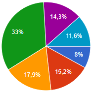
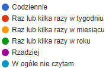
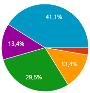
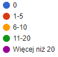
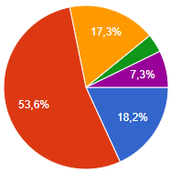

Jak często czytasz książki?
 Wnioski
WNIOSKI:
- Najwięcej ankietowanych (33%) czyta książki raz lub kilka razy w roku.
- Najmniej ankietowanych czyta książki codziennie (8%) lub w ogóle nie czyta (11,6%).
Jak często czytasz lektury szkolne?
 Wnioski
WNIOSKI:
- Najwięcej ankietowanych (41,1%) w ogóle nie czyta lektur szkolnych.
- Żaden z ankietowanych nie czyta lektur szkolnych codziennie.
- Bardzo mało ankietowanych (2,7%) czyta książki raz lub kilka razy w tygodniu.
Ile książek przeczytałeś/aś w ostatnim roku?
Wnioski
WNIOSKI:
- Większość spośród ankietowanych (53,6%) przeczytało od jednej do pięciu książek w ostatnim roku.
- Najmniej ankietowanych (3,6%) przeczytało od jedenastu do dwudziestu książek w ostatnim roku.
- Żadnej książki w ostatnim roku nie przeczytało aż 18,2% ankietowanych.